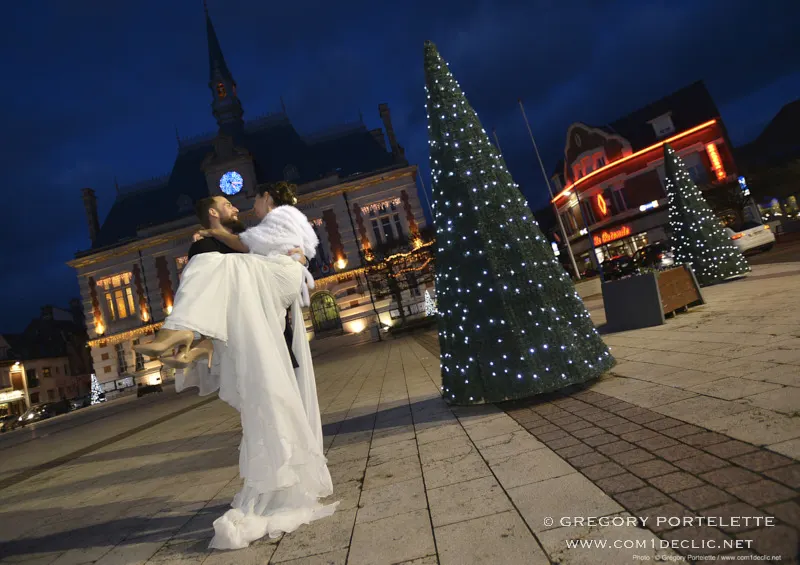
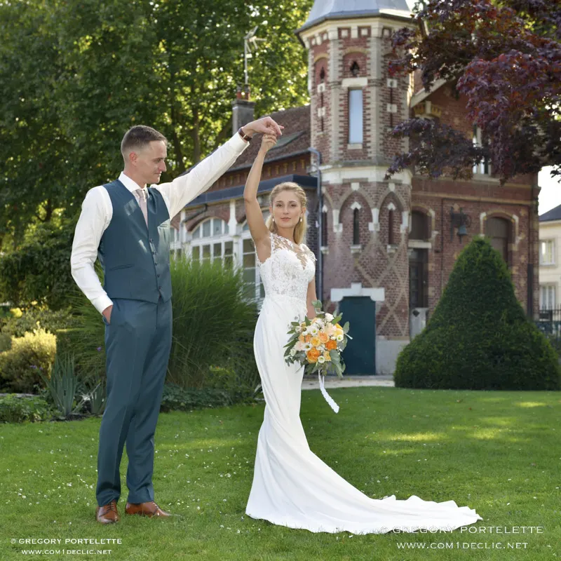
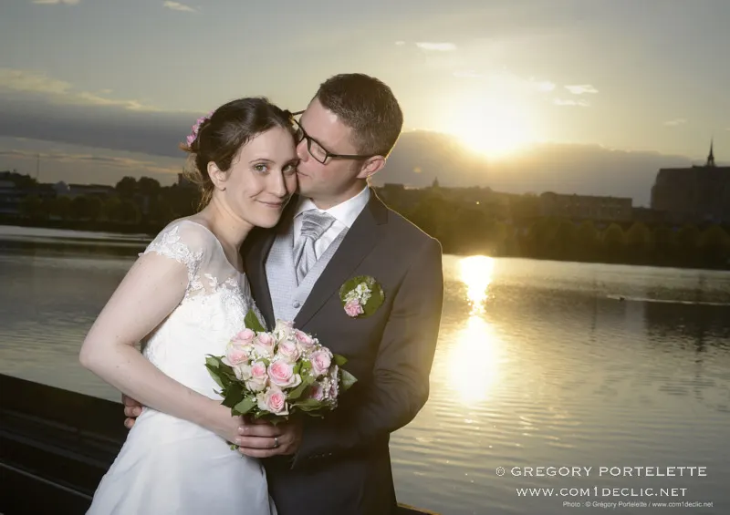
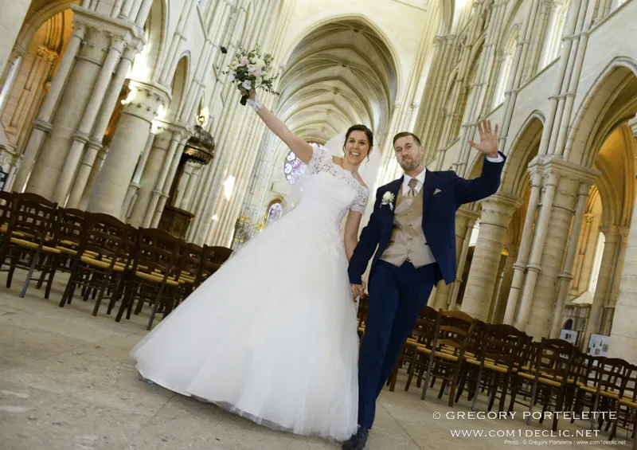
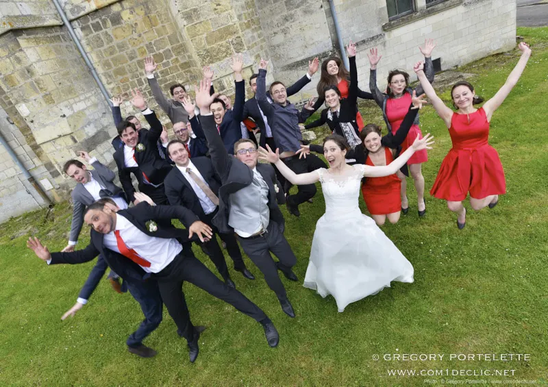
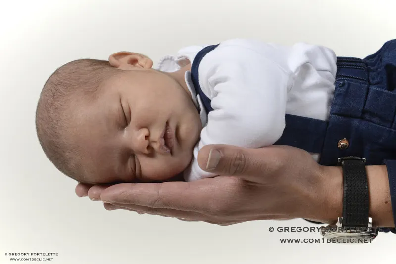
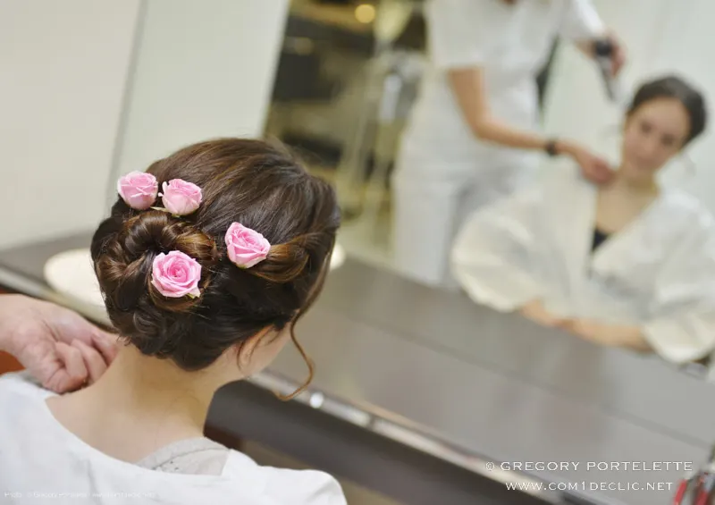
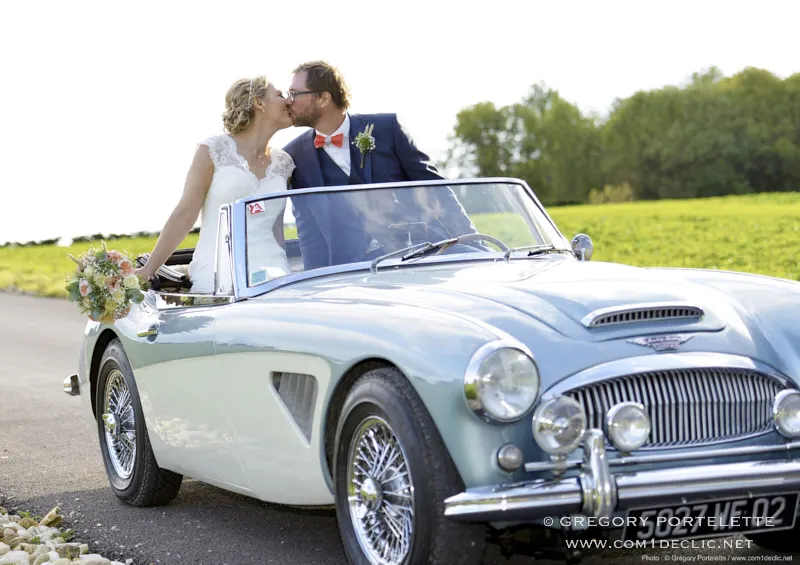
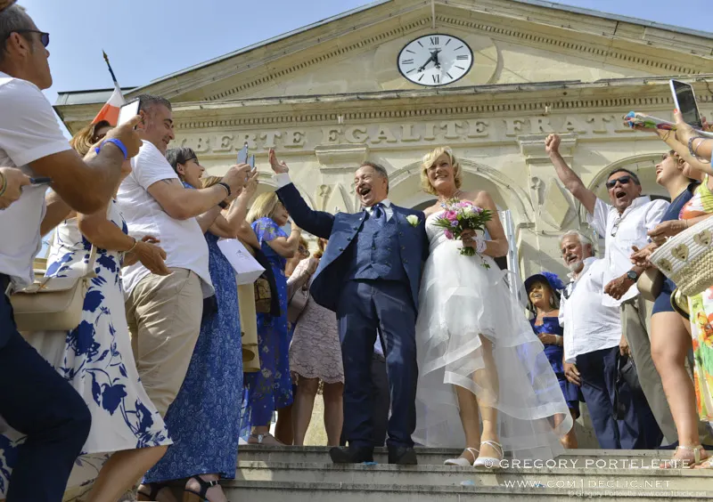

Grégory Portelette, photographe professionnel à Saint-Quentin
Des photos qui vous ressemblent.



Mariage, au coucher du soleilAvec plus de 10 années d'expérience, je photographie les entreprises (portraits, packshots, publicité, reportage) et les moments importants de la vie des familles : mariage, famille, enfants, bébé, grossesse.
- Plus de 10 ansde métier, photographe professionnel
- 40 m²de studio, 31 rue du Poitou
- 5 minde la sortie A26
- Sur rendez-vousuniquement, pour ne pas interrompre les séances
Entreprises et particuliers
Originaire de Saint-Quentin, dans l'Aisne, mes premiers déclics furent des photos sportives ; j'en réalise encore pour la presse régionale. Aujourd'hui, je travaille surtout pour les entreprises, et pour les familles aux moments qui comptent.
- Entreprise01Reportage photo
- Portrait02Portrait corporate
- Packshot03Packshot produit
- Publicité04Photo publicitaire
- 05Mariage

- 06Mariage, le vin d'honneur

- 07Famille, enfants et bébé

- Grossesse08Grossesse et book
Pour les entreprises
- Portrait corporate
- Vos photos portrait reflètent-elles vraiment ce que vous êtes ? Nous prenons le temps de trouver l'image qui vous convient, pour votre entreprise et pour vous : dirigeants, collaborateurs, curriculum vitae, trombinoscopes.
- Packshot et photo publicitaire
- La mise en valeur de vos produits est essentielle pour présenter puis vendre : catalogues, sites marchands, plaquettes. Détourage, plusieurs possibilités de fonds.
- Reportage photo
- Reportage photographique pour les entreprises ; et, depuis mes premiers déclics, des clichés sportifs pour la presse régionale.
Pour les particuliers
- Mariage
- Toute la journée, en restant discret : voir plus bas.
- Famille, enfants et bébé
- Rendre sur papier les évènements importants qui jalonnent la vie des familles. Parce qu'il est important que ces photos vous ressemblent, je travaille avec vous sur l'univers et les rendus.
- Grossesse et book photo
- Faites-vous plaisir : en couple, pour lui prouver qu'il ou elle est sublime, ou pour votre ado qui adore poser.
Le plus beau jour, à revivre toute une vie
Nous ferons connaissance lors d'un premier rendez-vous au studio, pour bien identifier vos attentes sur vos photos de mariage, voire en créer de nouvelles qui vous ressembleront.
Mon objectif est de mettre en image vos souvenirs : cette journée sera si riche en émotions que les photos vous les feront revivre tout au long de votre vie.
« Mon expérience vous accompagnera toute la journée, et je me montrerai discret pour vous laisser vivre pleinement vos émotions. »


Le cabriolet
À 5 minutes de la sortie A26. Ne cherchez pas une boutique : c'est un studio photo.
Un studio de 40 m², au calme
Je vous y accueille uniquement sur rendez-vous, pour ne pas interrompre les séances. Toute une gamme d'éclairages permet de créer des ambiances différentes pour vos packshots, photos de publicité et portraits.
Et pour plus de créativité, certains flashs de studio peuvent aussi sortir au milieu des champs.
Parlons de vos photos
Une séance au studio, un mariage, des portraits pour votre équipe : appelez-moi ou écrivez-moi, et nous fixons un rendez-vous.
- Mobile06 81 45 53 34
- Studio03 23 05 35 90
- Mailcom1declic@wanadoo.fr
- Studio, uniquement sur rendez-vous31 rue du Poitou, Saint-Quentin